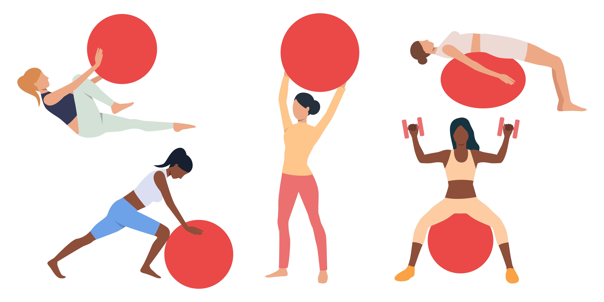

Kinesiology taping (or kinesio taping) is the application of a thin, stretchy, cotton-based therapeutic tape that can benefit a wide variety of injuries and inflammatory conditions. Physiotherapists use kinesiology taping in the clinic every day to assist muscles and their interaction with your body. Not only does this potentially provide pain-free movement, but it also assists your physiotherapist to determine which muscles or joints require additional control.

The Swiss Exercise Ball is a versatile piece of equipment available to help with back pain and many other conditions. Swiss Exercise Ball will help to:
- Eliminate your pain
- Improve your muscular endurance and strength
- Attain better posture, balance, body awareness and coordination
- Learn to lift properly
- Improve your balance and flexibility
- Enjoy a low impact aerobic workout

Proprioception is the sense of knowing where your body part is in space. Proprioceptive and balance exercises teach your body to control the position of a deficient or an injured joint. A common example of a proprioceptive or balance exercise is the use of a balance or wobble board after an ankle sprain.

Joint mobilisation techniques focus on attaining a normal range of pain-free joint motion. Nearly every restriction in movement can be regained by a specific joint technique performed by an experienced musculoskeletal physiotherapist.
Common Examples of Joint Mobilisation & Pain Relief Techniques may include:
- Gentle Joint Mobilisations (eg Maitland, Mulligan, Kaltenborn techniques)
- Mobility Exercises (eg McKenzie exercises)
- Minimal Energy Techniques (Osteopathic-based active joint repositioning techniques)
- Joint Manipulation
- Traction / Distraction Techniques
- PIM - Physiotherapy Instrument Mobilisation